Comercial · UNISC
UNISC — Comunidade
Campanha da UNISC com dezenas de locações — obra, cozinha, piscina, hospital, biblioteca — e um desafio claro: fazer todas as luzes conversarem como um filme só.
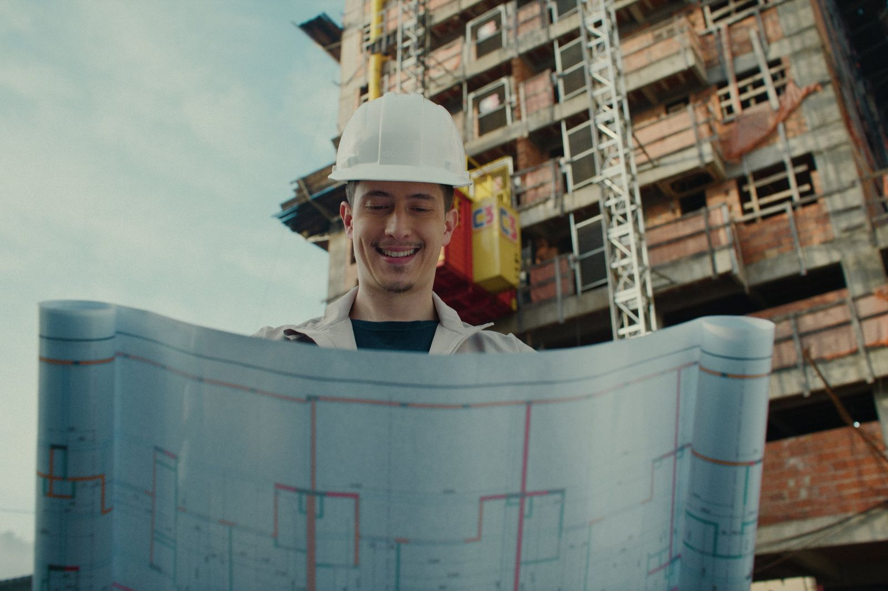
Créditos
- AgênciaSobe AE
- DireçãoFilipe Ferreira
- Direção de fotoLuciano Paim
- Direção de arte e elencoLuiza Scherer
- ProduçãoRenato Winckiewicz
- Assistência de câmeraLefosca
- ElétricaEvandro Zaka
- Make-upMonica Rizzetti
- Pós-produçãoBrunno CG
- ColorGermano Michelon
- Fotografia stillAle Siditadi
Stills
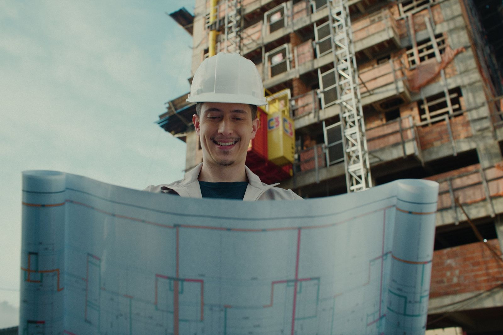
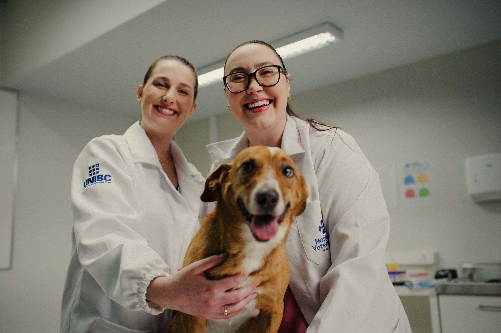
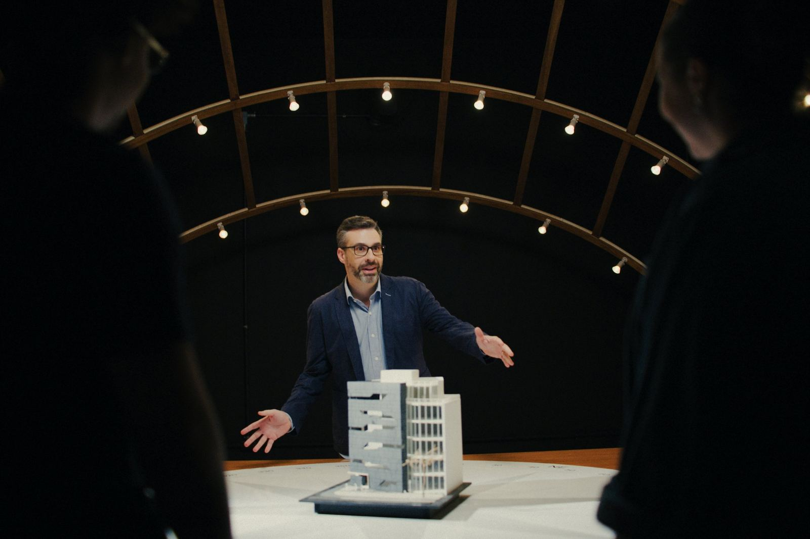
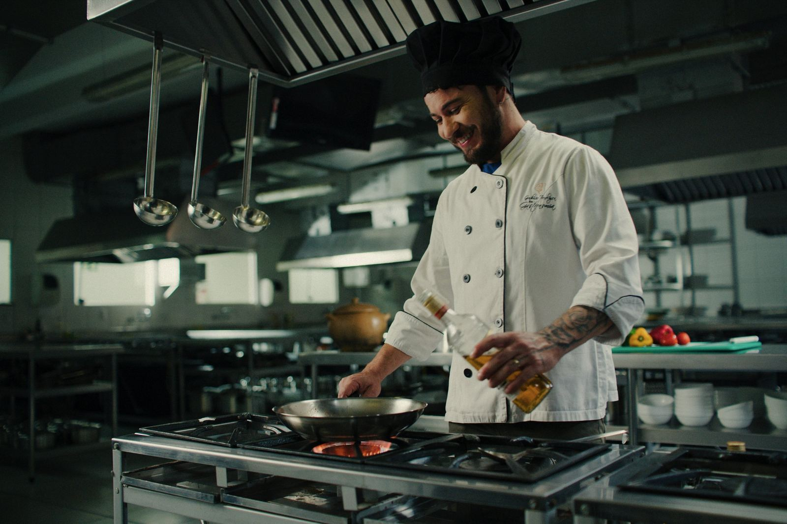
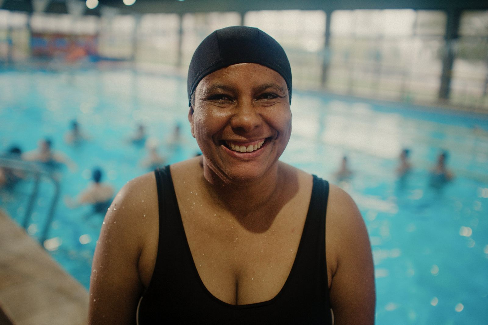
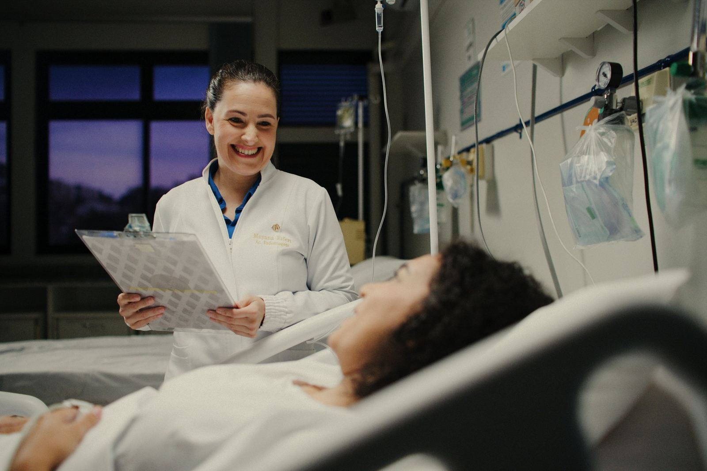
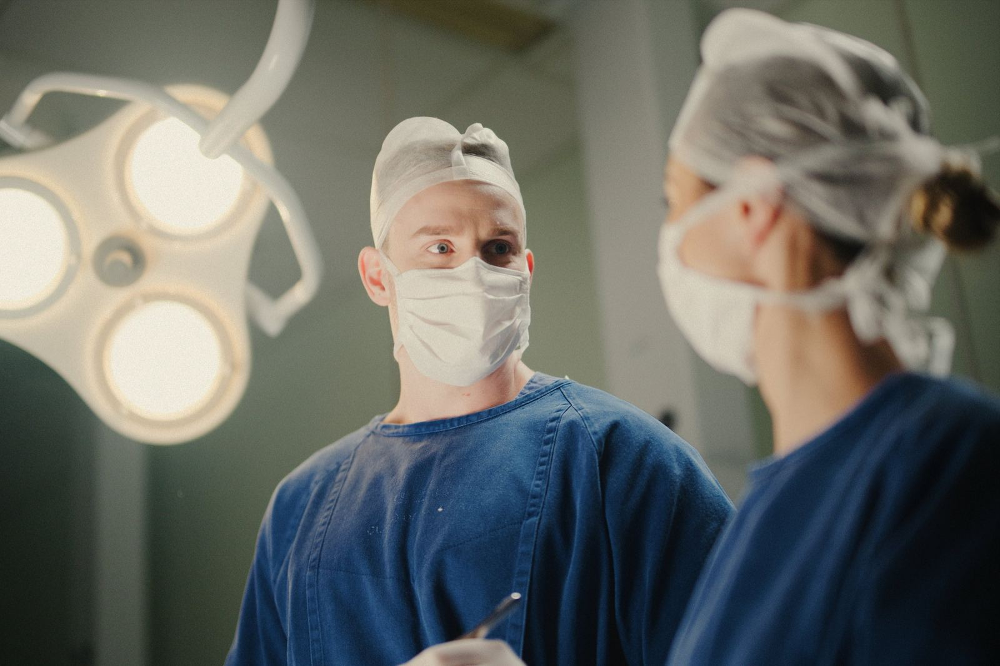
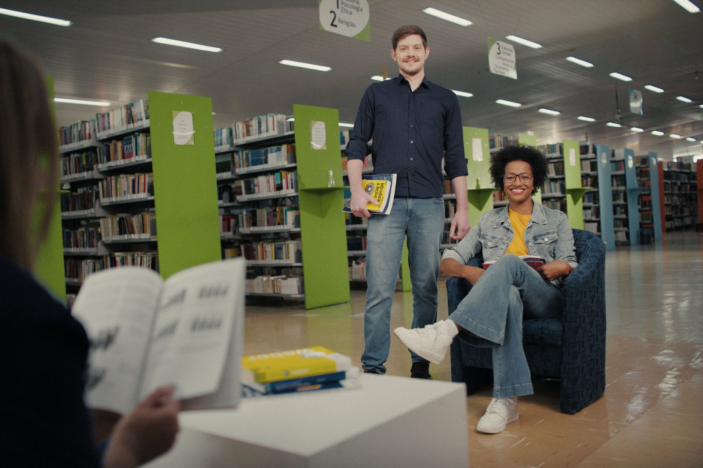
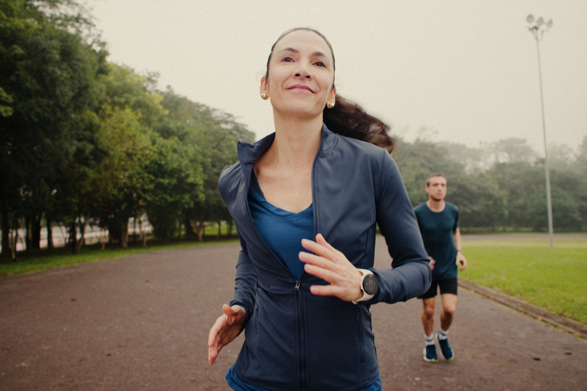
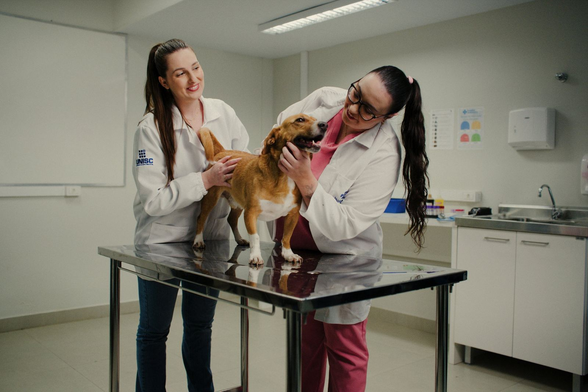
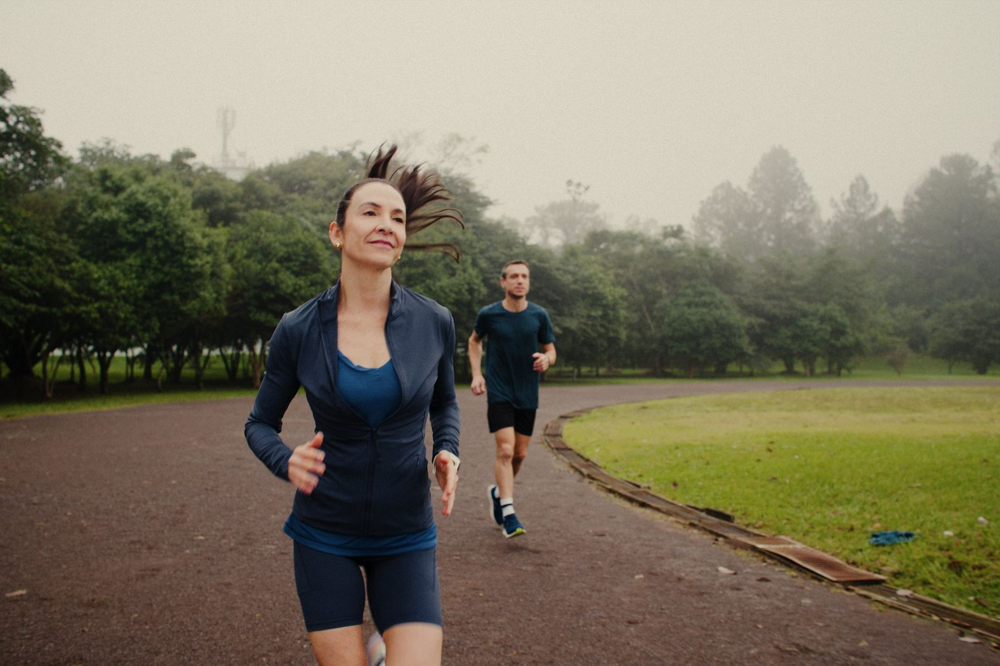
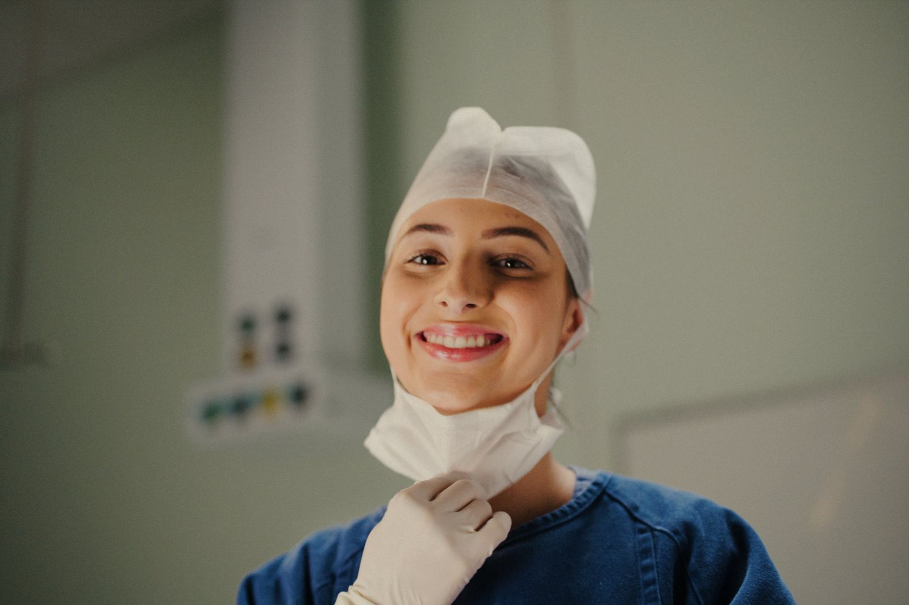
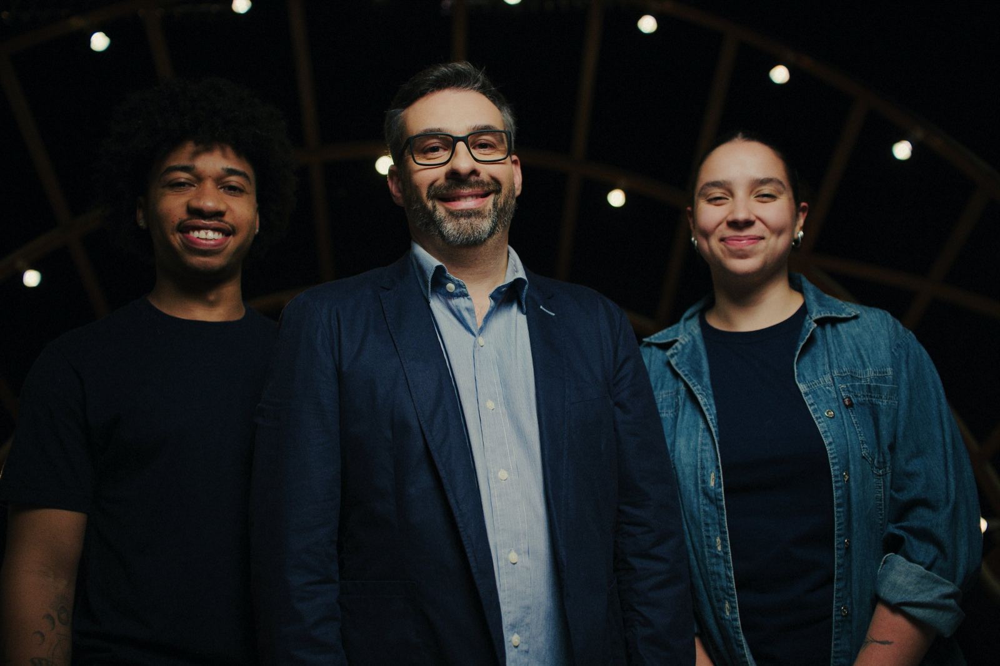
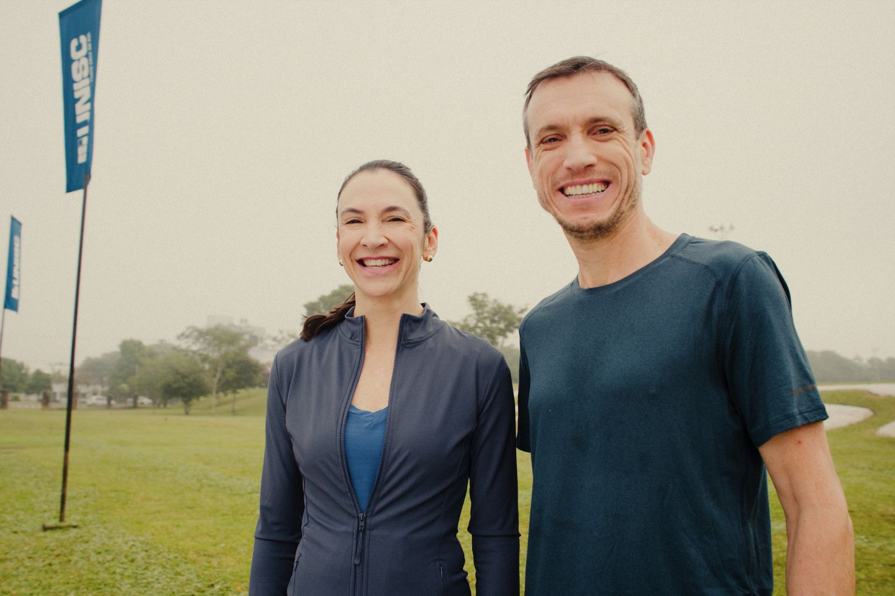